Todo lo que necesitas saber para instalar, configurar y sacar el máximo provecho del Hyrox Performance Tracker en cualquier dispositivo.
El Hyrox Tracker es una webapp progresiva (PWA). No se descarga del App Store ni Google Play — se instala directamente desde el navegador en segundos.
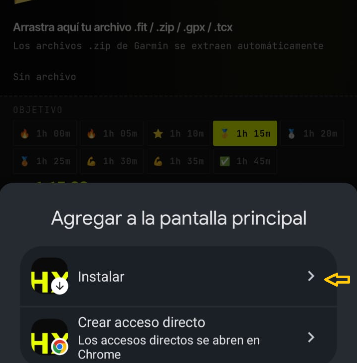
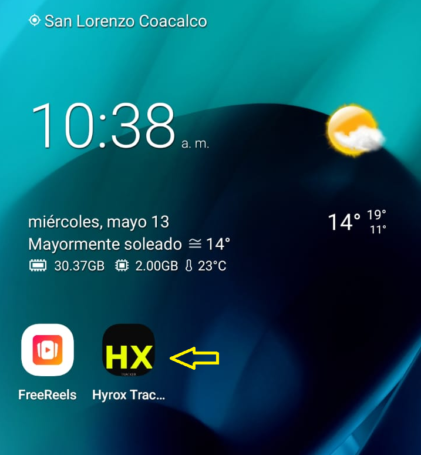
Cuando abres el Hyrox Tracker por primera vez, aparece un modal de bienvenida donde eliges cómo guardar tu histórico de carreras. Cada opción tiene implicaciones distintas.
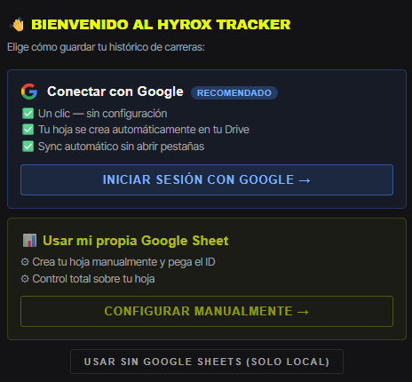
https://docs.google.com/spreadsheets/d/TU_ID/edit) → Conectar. La app extrae el ID automáticamente y prueba la conexión.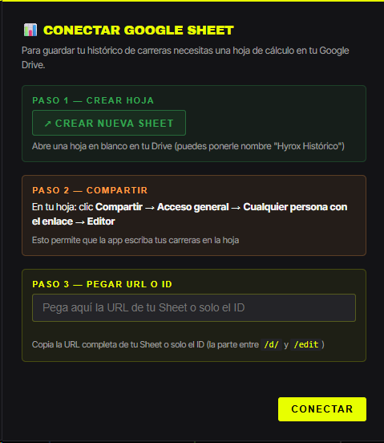
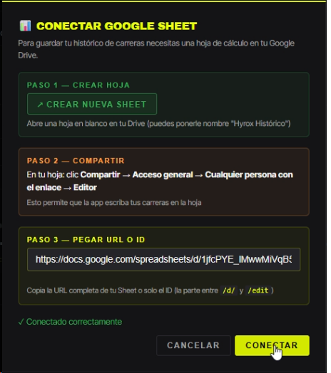
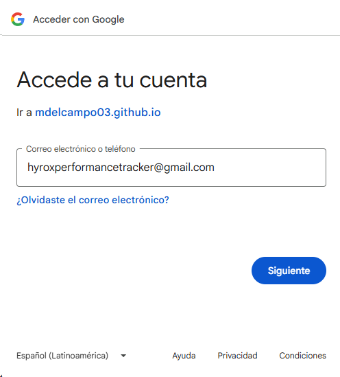
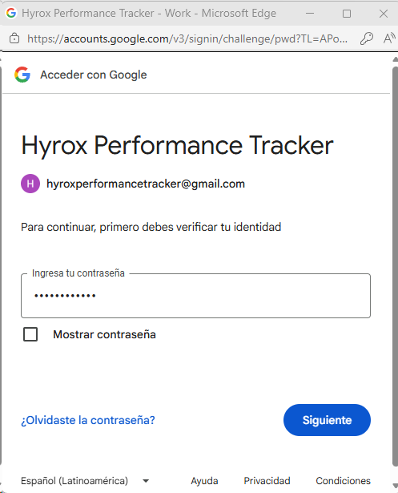
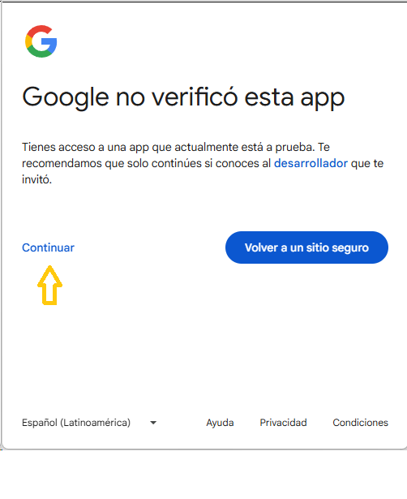
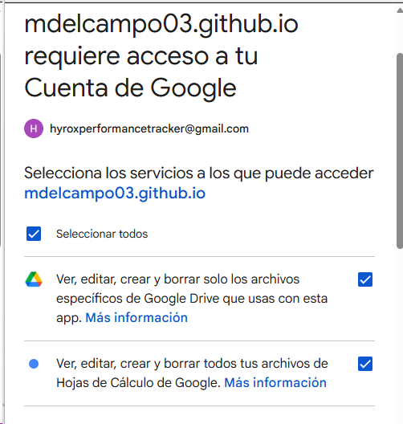
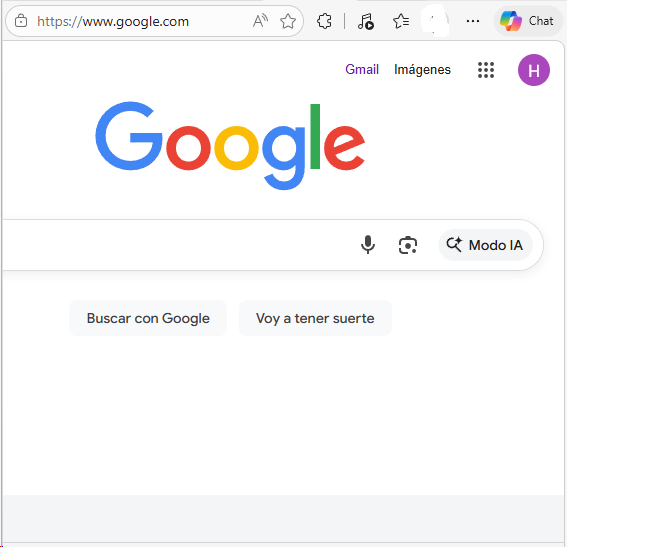
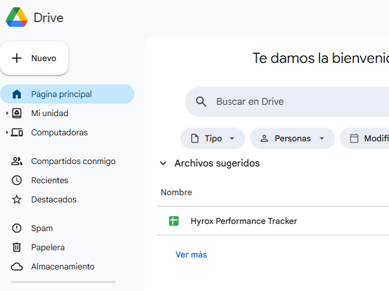
| Característica | Solo local | Manual (Sheet) | OAuth Google |
|---|---|---|---|
| Setup inicial | Ninguno | ~2 min | 1 clic |
| Cuenta necesaria | No | Google (solo Drive) | Google (OAuth) |
| Datos en tu Drive | No | Sí (hoja propia) | Sí (automático) |
| Sync entre dispositivos | No | Sí (importar manual) | Sí (automático) |
| Hoja privada | — | No (enlace público) | Sí |
| Funciona offline | Sí | Local sí, sync no | Local sí, sync no |
| Sync automático al guardar | — | Semi (link extra) | Sí |
Este es el flujo completo desde que abres la app por primera vez hasta que tienes tu histórico de carreras analizado y guardado.
Descripción detallada de cada componente de la interfaz y cómo usarlo.
⚙ Conectar mi Sheet — abre el modal de configuración↓ Importar — lee y trae carreras desde tu Google Sheet↑ Sync a Sheets — sube las carreras pendientesAbrir Sheets ↗ — abre tu hoja en una nueva pestaña
.fit, .zip, .gpx y .tcx. En desktop puedes arrastrar el archivo directamente. En móvil toca el área para abrir el selector de archivos (app Archivos en iOS, selector de Android).run ÷ 7 y se restan de la estación correspondiente.
obj XX:XX (el tiempo objetivo para esa categoría según el preset elegido).
obj mm:ss en amarillo) y delta (verde si vas adelante, rojo si vas atrás).Pasos para obtener el archivo de tu carrera Hyrox desde la app y web de Garmin Connect.
Referencia rápida de los conceptos que usa la aplicación.
tiempo_run ÷ 7. Solo existen 7 roxzones (entre Run1→Run7 y sus estaciones). La estación 8 (Wall Balls) no tiene roxzone porque es el final de la carrera.drive.file).